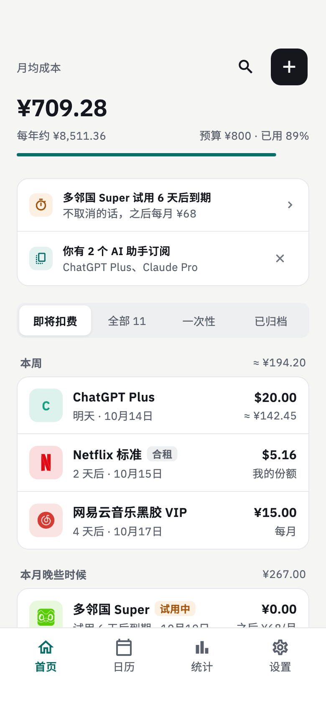
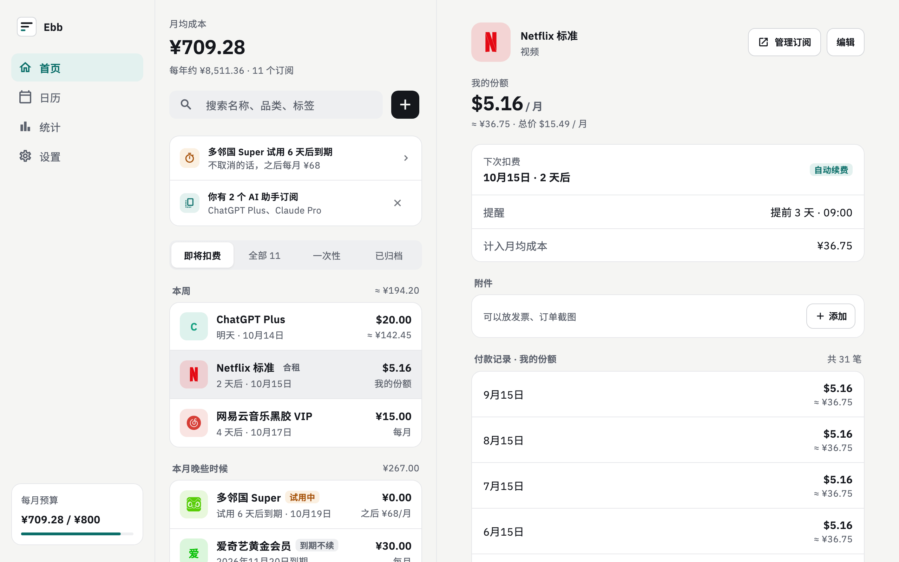
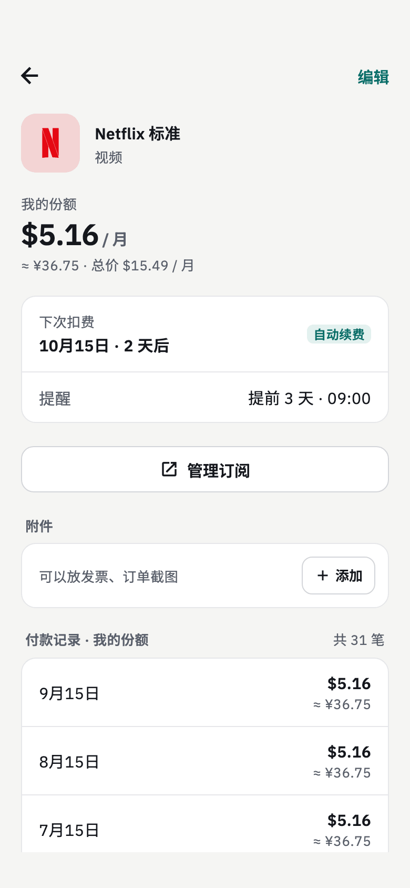
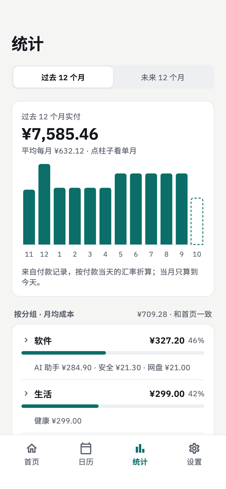
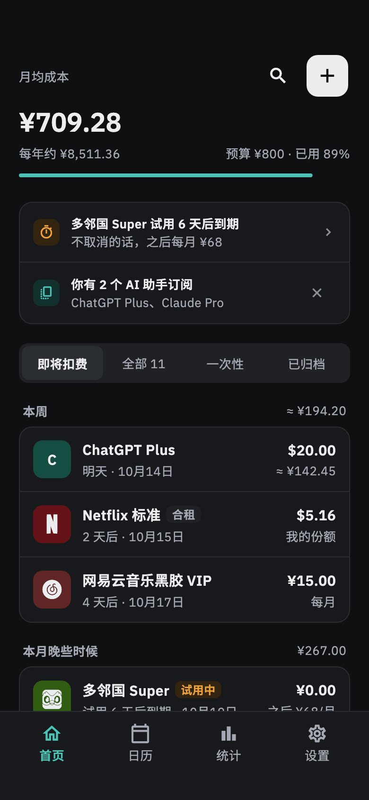

数据只存本机的订阅管理器
Ebb 是一个注重隐私的开源订阅管理 App，支持 Android、macOS、Windows 和 Linux。它帮你算清每个月在订阅上真正花了多少，并在扣费前提醒你。没有账号，不上云，没有遥测。
Android 10+ · macOS 13+ · Windows 10+ · Ubuntu 22.04+ · 中文和英文界面

每月真正花多少，一眼看清
不管年付、月付还是合租，都折算成一个实在的数字：月均成本。
月均成本
年付按 12 个月折算；合租只算你的份额；首期优惠按恢复后的原价算。
多币种
每个订阅按原币录入，汇总时折算成你的基准货币；每笔付款记下当天的汇率。
扣费前提醒
提前几天发本地通知。可以记录试用、标记到期不续，退订的订阅可以归档。
统计与预算
实付历史、未来 12 个月预测、按分组和品类分析、同类重复提示、月度预算和季度复盘。
导入已有数据
支持 Tilla 和 SubscriptionManager 的导出文件，写入前先预览。
备份在自己手里
备份成一个 zip 文件，可以在另一台设备上恢复，也能导出 CSV。订阅可以附上发票收据。
隐私从设计开始
你订阅了什么，说明了你是怎样的人。Ebb 把这些留在你的设备上。
- 所有数据都存在本机：不用注册账号，也没有服务器保存你的数据。
- App 和这个网站都没有遥测、统计分析和崩溃上报。
- Ebb 只连两个地方：open.er-api.com 获取汇率，GitHub Releases 检查新版本（可以关闭）。
- 以 GPL-3.0 协议开源，谁都可以查看它做了什么。
手机和电脑都好用
手机上单栏，宽屏上左右双栏。浅色和深色跟随系统。




下载
到 GitHub Releases 下载最新版。安装包暂时没有经过 Apple、Microsoft 的签名认证，第一次打开的方法见发布说明。
| Android 10+ | APK |
|---|---|
| macOS 13+ | dmg，同时支持 Intel 和 Apple 芯片 |
| Windows 10+ | 安装程序，或免安装 zip |
| Linux | .deb（Ubuntu 22.04+ 及 Debian 系），或免安装 .tar.gz |
暂无 iOS 版。
常见问题
Ebb 免费吗？
免费。Ebb 以 GPL-3.0 协议开源，没有付费项目，也不用注册账号。
我的数据存在哪里？
只存在你的设备上的本地数据库里，不会上传。想换设备或留一份副本，就备份成 zip 文件，再在另一台设备上恢复。
Ebb 会联网吗？
只在两种情况下联网：从 open.er-api.com 获取汇率，以及到 GitHub Releases 检查新版本。检查新版本可以在设置里关闭。没有遥测，也没有崩溃上报。
能从 Tilla 或 SubscriptionManager 导入吗？
能。先在 Tilla 或 SubscriptionManager 里导出备份，再在 Ebb 的「设置 → 导入数据」里选择这个文件。导入前会先预览，已经有的订阅会对上，不会重复添加。
月均成本是怎么算的？
每个订阅折算成每月的平均花费：年付按十二分之一算，合租只算你的份额，首期优惠按原价算。试用中、到期不续、已退订和标记为报销的订阅不计入。实际付了多少，看统计页的实付历史。
支持多种货币吗？
支持。每个订阅保留自己的币种，汇总时按 open.er-api.com 的汇率折算成你设定的基准货币（默认人民币）。
有 iPhone 版吗？
暂时没有。目前支持 Android、macOS、Windows 和 Linux。
能在多台设备之间同步吗？
目前不能。数据只存在各自的设备上，可以用备份文件迁移。